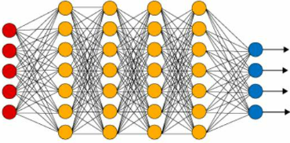

Back in the 1950s, legendary mathematician Alan Turing — a founder of the computer science — posed a groundbreaking question: "Can machines think?"
This question sparked a revolution. And soon after, AI emerged as an exciting new scientific field.
AI grew as a specialized field within computer science, the discipline that powers everything from hardware and programming languages to operating systems and algorithms.
Computer science is a vast field with many interconnected areas, and AI became one of its most fascinating branches.
In the 1950s, John McCarthy — a founder of the computer science — described it as the science and engineering of making intelligent machines. Over time, this definition expanded to describe AI as the creation of machines that learn, reason, making decisions, and mimic human-like itellignce to solve problems.
In today's data-driven world, the European Commission defines AI as systems that perceive their environment, collect and interpret data, reason over inferred knowledge, make decisions, and take actions to achieve a goal.
Turing's Test
Expert Systems
Deep Learning
Generative AI

Artificial Intelligence can be classified into two broad types: ANI and AGI. Most AI you see today is ANI (Artificial Narrow Intelligence), built for specific tasks. AGI (Artificial General Intelligence) refers to AI that can understand, learn, and perform any intellectual task that a human can.
Performs a single task extremely well, such as language translation, facial recognition, or recommendation engines. Most AI we see today is ANI.
Capable of understanding, learning, and applying intelligence across a broad range of tasks, similar to human cognition. Still theoretical and not yet realized.
There is no unique way to categorize the subdomains of AI
While this isn't a complete list, these represent some of AI's most impactful applications.
Predictive AI and Generative AI are two of the various broad classes of AI, each of which has a different range of uses.
Together, they complement each other — Predictive AI supports decision-making, while Generative AI fuels creativity and content generation.
Algorithms and AI systems
Algorithm: a set of (computer) instructions — rules, or operations—to solve a problem or perform an action.
Traditional algorithms follow a strict set of well-defined instructions. They solve problems by applying
fixed, logical steps.
Examples: Calculating the cost, sorting numbers, searching in databases, finding the shortest path
in a network (Dijkstra's
algorithm).
AI algorithms learn patterns from data. They adjust themselves over time, rather than following only
pre-set
instructions.
Examples: Machine Learning models recommending model, predicting house prices, Neural Networks
recognizing faces,
Reinforcement Learning for self-driving cars.
AI Algorithms:
Learn by themselves to produce better outputs or processes from
input data.
Have ability to learn to produce better
outputs or to improve their processes by themselves, adapting to the input data; whereas convertional
computing algorithms have a more rigid and deterministic input-output behavior.
AI system ≠ AI algorithm
AI system: infrastructure and components needed to implement and deploy AI algorithms in the real world.
Algorithm is a procedure or set of instructions to perform a task or reach a goal.
By contrast, an AI system encompasses the broader infrastructure and components
needed to implement and deploy our AI algorithm into the real world.
This
includes elements like hardware and software, database and data storage, network infrastructure, and so
on...
Input
...
Output
"Data" is the fuel that makes AI
work. Different ways AI systems can acquire data.
Depending on the type of AI system, there are
different approaches to data acquisition:
Once data has been acquired, almost every AI system nowadays relies on Machine Learning and Deep Learning techniques.
Interacting with the physical or digital environment to some degree.